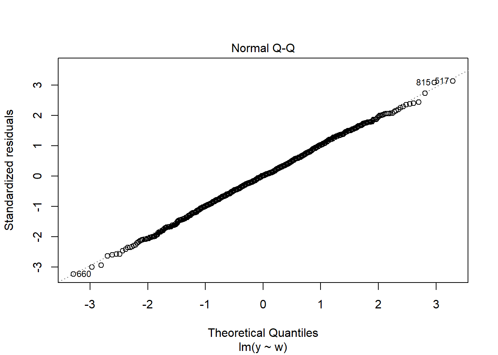
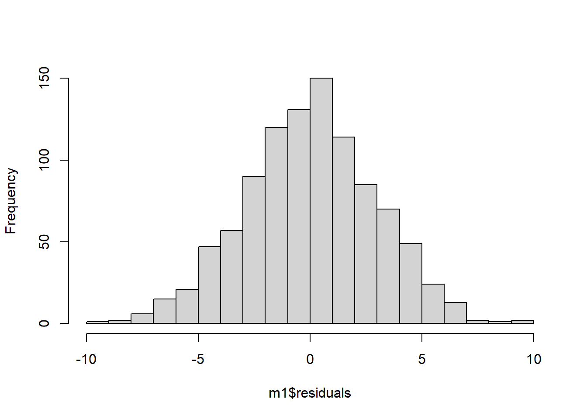

This brief blog post will show you how to overlay a normal density curve on a histogram. This can be helpful for comparing empirical distributions to the theoretical normal distribution, which comes up often in linear regression residual diagnostics.
Introduction
Those of us socialized in SPSS might remember being able to check a box labeled “Display normal curve” when creating a histogram. This was a really easy step and it made it straightforward to compare the empirical frequencies with an appropriate normal distribution.
When we apply ordinary linear regression, it is helpful to check the residual distribution for normality. Only if the residuals are normally distributed can the usual normal theory-based inference be applied.
But R doesn’t offer an easy way to overlay a normal distribution in a histogram. But don’t fret: this quick blog post will show you how to do it.
Simulating some data for demonstration
Let’s quickly simulate some data and then run a linear regression to inspect the normality of the residuals.
set.seed(1234)n <- 1000Lw <-rnorm(n = n, mean =2, sd =4)y <-0.5* w +rnorm(n = n, mean =5, sd =3)df <-data.frame(w, y)m1 <-lm(formula = y ~ w, data = df)summary(m1)
Call:
lm(formula = y ~ w, data = df)
Residuals:
Min 1Q Median 3Q Max
-9.4982 -1.9317 0.0435 1.9611 9.2053
Coefficients:
Estimate Std. Error t value Pr(>|t|)
(Intercept) 4.96440 0.10293 48.23 <2e-16 ***
w 0.54178 0.02332 23.23 <2e-16 ***
---
Signif. codes: 0 '***' 0.001 '**' 0.01 '*' 0.05 '.' 0.1 ' ' 1
Residual standard error: 2.94 on 998 degrees of freedom
Multiple R-squared: 0.351, Adjusted R-squared: 0.3504
F-statistic: 539.8 on 1 and 998 DF, p-value: < 2.2e-16
Assessing normality of residuals
We can get the diagnostic plots using plot(). The plot for normality of the residuals is the second one.
plot(m1, 2)

This is a Q-Q-plot. It shows the standardized residuals plotted against the theoretical standard normal distribution. The standard normal distribution tells us, for example, that about 2.5% of the density should be found 1.96 standard deviations below the mean.
pnorm(-1.96, mean =0, sd =1)
[1] 0.0249979
So, if our empirical distribution were normal, then about 2.5% of the distribution should fall below that critical value. The closer the empirical distribution of the standardized residuals follows that of a standard normal distribution, the more nicely the points will fall directly on the diagonal line.
This isn’t super complicated, by I have found it a bit difficult to explain to students sometimes. A histogram for assessing normality is, in my opinion, didactically a bit more easy to work with.
We can plot the residuals as a histogram easily, as well:
hist(m1$residuals, breaks = 20L, main ="")

At this point, we could decide to standardize the residuals by dividing each by the standard deviation, but that’s not strictly necessary.
Overlaying a normal density curve
But let’s say we wanted to overlay a nice normal distribution curve. What we can do is
produce the histogram in terms of the density, rather than the frequencies
calculate the density of the normal distribution using dnorm() and over the range of the residuals.
hist(m1$residuals, breaks = 20L, freq =FALSE, main ="")# Note that the sequence here must be called "x", otherwise dnorm() won't work x <-seq(from =round(min(m1$residuals), 1), to =round(max(m1$residuals), 1), by =0.1)curve(dnorm(x, mean =0, sd =sd(m1$residuals)), add =TRUE)
Now, if we wanted to look at the standardized residuals instead, we could do:
Henrik Kenneth Andersen is a Postdoc at the Chemnitz University of Technology, Institute of Sociology.
Citation
BibTeX citation:
@online{kennethandersen2022,
author = {Henrik Kenneth Andersen},
title = {Overlaying a {Normal} {Curve} on a {Histogram} in {R}},
date = {2022-11-25},
url = {https://henrik-andersen.github.io/methods-center//posts/normal-curve/normal-curve.html},
langid = {en},
abstract = {This brief blog post will show you how to overlay a normal
density curve on a histogram. This can be helpful for comparing
empirical distributions to the theoretical normal distribution,
which comes up often in linear regression residual diagnostics.}
}
![]()